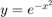
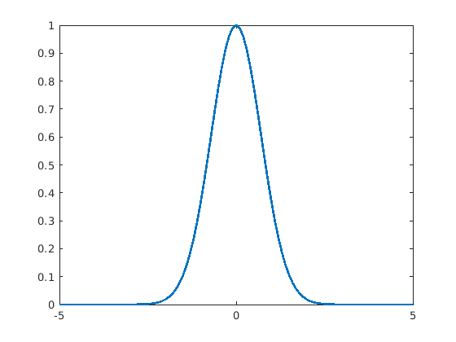
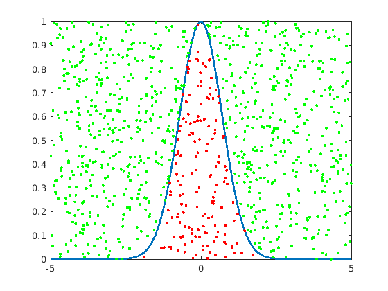
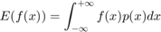
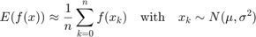
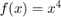

Monte Carlo integration
Probably the most common numerical integration technique in our area is a little bit strange. It turns out that often you can approximate integrals by using random number generation.
Contents
Let's return to the curve we started with: . For this method, we are going to draw a box around the curve, completely capturing in. The box we'll call the envelope and since it is rectangular, the area is easy to calculate. Then we are going to randomly select points inside the envelope and count how often they are under the curve. Since the probability of being under the curve must be proportional to the area under the curve, we can now calculate what the area under the curve is, relative to the area of the envelope. An example!
Monte Carlo Example
Make an anonymous function for the curve and plot it
fcn = @(x) exp(-x.^2);
xax = linspace(-5, 5, 101);
plot(xax, fcn(xax), 'linewidth', 2)
 Define the envelope
width = 10; height = 1; e_area = (width * height);
Generate a bunch of random points in the envelope
N = 1e3; rx = ( rand(N, 1) - 0.5 ) * width; ry = ( rand(N, 1) ) * height;
Count which points are in the area of interest
in = ry < fcn(rx); M = mean(in) * e_area
M =
1.6300
Display the points in the figure
lops = {'marker', '.', 'linestyle', 'none'};
line(rx(~in), ry(~in), 'color', 'g', lops{:})
line(rx( in), ry( in), 'color', 'r', lops{:})
 Back to the expected value
In many of the same cases as Gaussian quadrature, we can use a Monte Carlo method to approximate an integral, by randomly sampling from the factored distribution and computing the function on those samples:


Let's see this at work for :
fcn = @(x) x.^4 ;
Let's also set the parameters of the distribution:
mu = 1; si = 1; N = 1e6; x = randn(N,1)*si+mu; mean(fcn(x))
ans = 10.0130
Y tho?
These Monte Carlo methods clearly take so much more computing power. Why do we use them? The answer is simple. MC methods are easy to implement and widely applicable. You don't have to think about them too much.